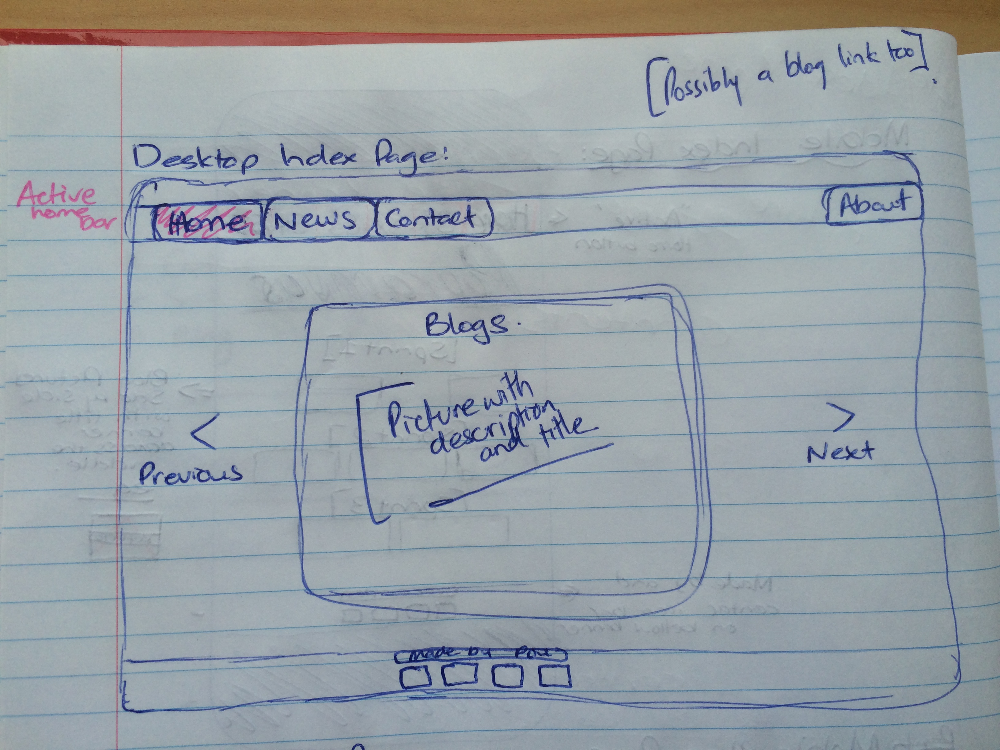
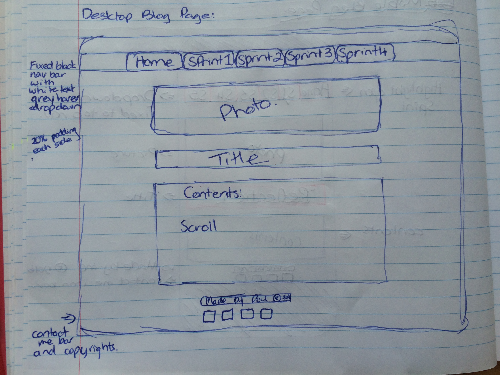
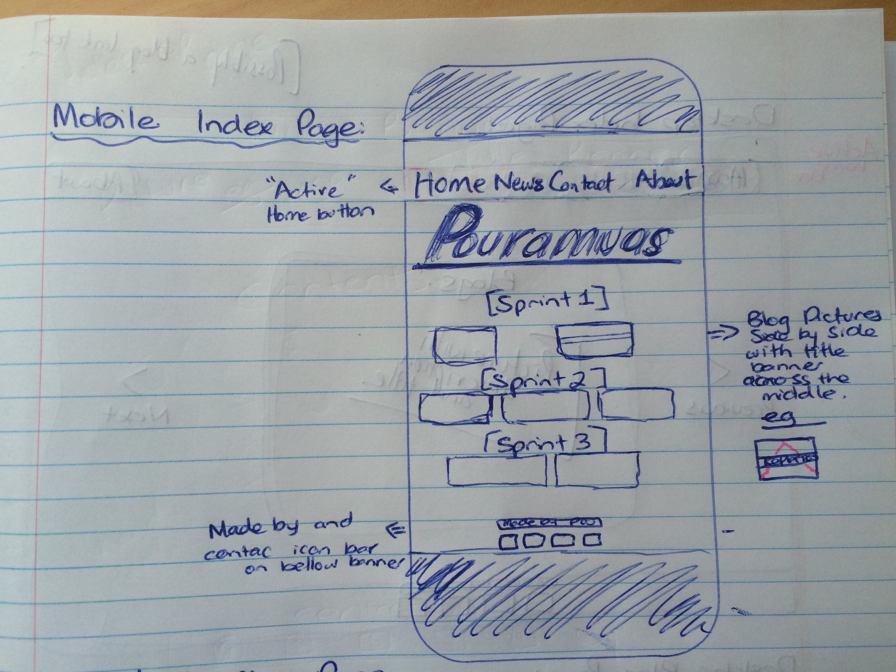
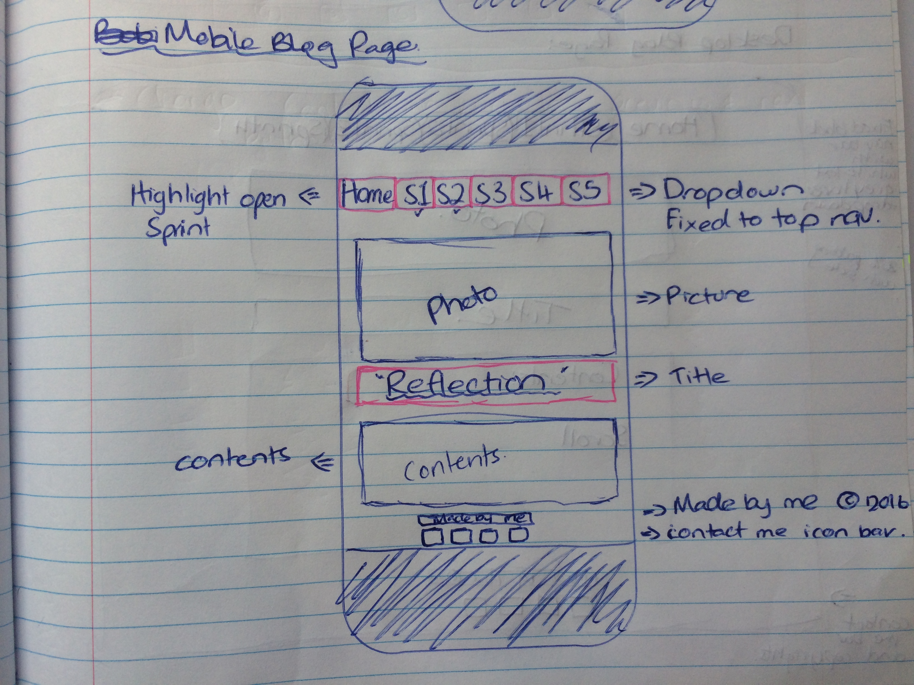

Design to Web
What a responsive site is, and why responsiveness is important.
A responsive site is a webpage that responds to the size of your device,
adjusting its layout to the size of the device. For example a desktop would show
a title possibly a drop down nav bar some contents and lots of blogs all in a
row whereas a mobile would show the title an easy nav bar and singular blogs
all in line vertically. I feel it is important because its hard trying to push
little desktop button on a small cellphone screen.
What mobile first design is, and why it's important?
Mobile internet usage grows and grows everyday. Making mobile design the
number one priority all you need to do is focus on creating a great user
experience without all the fancy desktop stuff, because you have a much smaller
screen to work with. Making an easy use and clear mobile webpage or app makes
everything much easier.
What frameworks are, and their pros and cons?
A framework provides functionalities/solution to the particular problem area.
Definition from wiki: "A software framework, in computer programming, is an abstraction
in which common code providing generic functionality can be selectively overridden or
specialized by user code providing specific functionality." Some of the pros and cons
are you can visually design what you want and then learn exactlly which codes you need to achieve that goal.
What a wireframe is and why we use it?
These are my wireframes. Hover your mouse over the image to know which wireframe is which. We use them to




The aspects of your wireframes you found difficult to implement, and why?
Well for my 'Desktop Index Page' wireframe I couldn't make my top nav bar fixed
to the top in a full-length black bar, I ended up changing the layout of the blogs
because what I had in mind didn't quite work out either so I pretty much tweak it all
and changed it up. For my 'Desktop Blog Page' I changed everything about it to make
it clearer to read, the only thing that annoys me about the layout is that my nav
bar isn't fixed to the top also I've been trying to add my wireframe pictures all
in a row (side by side) on this blog. Havent quite figured out how to implement the
mobile wireframes either.
Meditation Process
How did the 'process over product' concept affect the way you tackled
the site redesign and rebuild?
Reading this article
Process Over Product
gave me a better understanding of what it actually is. It affect me quite good,
I really loved all the processes I had to go through to redesign my website I got
quite caught up in how my webpage was looking and so I spent waaaay longer than
I should have tweaking things on my webpage but I definately enjoyed the process
of it all.
What did you think about meditation before reading chapter 2?
My thoughts on meditation were that you just sit on the ground and relax
take deep breaths and focus on that moment only, I never really thought too
much about it, just a relaxing strategy.
What new things have you learnt about meditation?
Now that I have read Mindfulness (Chapter 2)
of Search Inside Yourself I have learnt that you need to create an intention
for meditating, secondly 'follow your breath' by focusing on it, thirdly gather
your attention and see how long you can hold it before distractions take over,
and when they do just regain your attention once again.
The meditation techniques that stood out to me was the “grandmother mind”:
adopting the mind of a loving grandmother”. One of my favourite quotes was
“Breathing as if your life depends on it.”